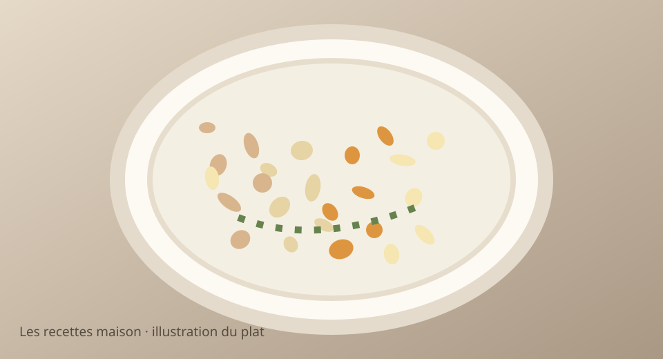

Mardi 17 novembre 2026 · Menu validé
Colin au citron, riz et butternut rôtie

Illustration stylisée, non photographie.
Version ados
Petites portions, ingrédients séparés, sans épices, tomates, carottes ni légumes verts. Pommes de terre et riz nature acceptés.
Version parents
Même base, agrémentée des légumes, sauce et assaisonnements indiqués dans les étapes.
Ingrédients
- 500 g de filets de colin
- 180 g de riz basmati cru
- 600 g de courge butternut (poids brut)
- 1 citron
- 1 c. à soupe d’huile d’olive
- Sel et poivre (poivre uniquement pour les parents)
- Persil ou thym (parents, facultatif)
Préparation simultanée, pas à pas
- Préchauffer le four à 200 °C chaleur tournante. Éplucher la butternut, retirer les graines, couper en cubes et mélanger avec la moitié de l’huile. Enfourner 20 à 25 min.
- Rincer et cuire le riz au cuiseur à riz ou en casserole selon le paquet.
- Déposer les filets de colin dans un plat, badigeonner avec le reste d’huile et cuire au four environ 10 à 15 min selon l’épaisseur, jusqu’à 63 °C à cœur.
- Prélever les portions des ados : poisson nature et riz, sans citron ni légumes mélangés.
- Pour les parents, ajouter citron, herbes et poivre au poisson, puis servir avec le riz et la butternut rôtie.
Prix et calories estimés, non vérifiés en magasin. Ajuster les quantités à l’appétit.